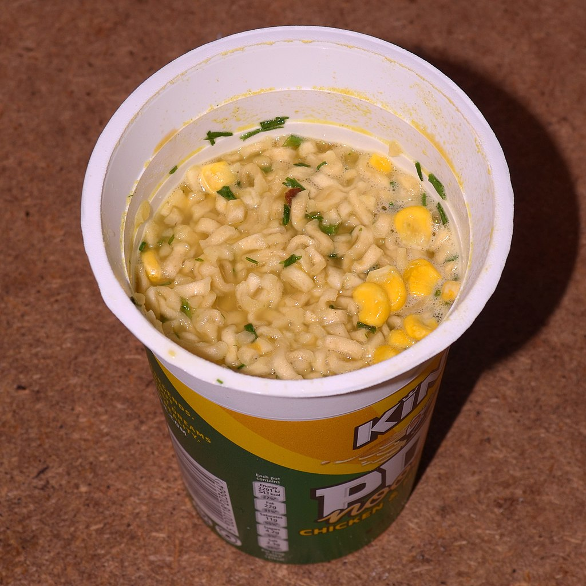

Homepage
Pot Noodle

Description
A favourite of lazy students. Quick and easy to prepare with no dishes to clean up afterwards
(serves
1)
Ingredients
Steps
- Boil the water.
- Fill the pot noodle up to the fill line with boiling water.
- Replace the foil lid. Wait a few minutes and stir.
- Wait a few more minutes, add the sauce sachet and stir again.